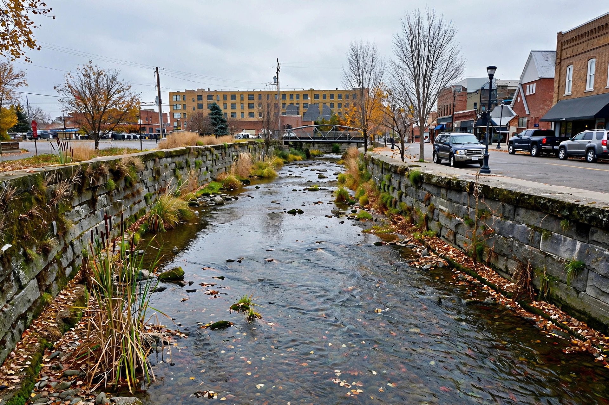
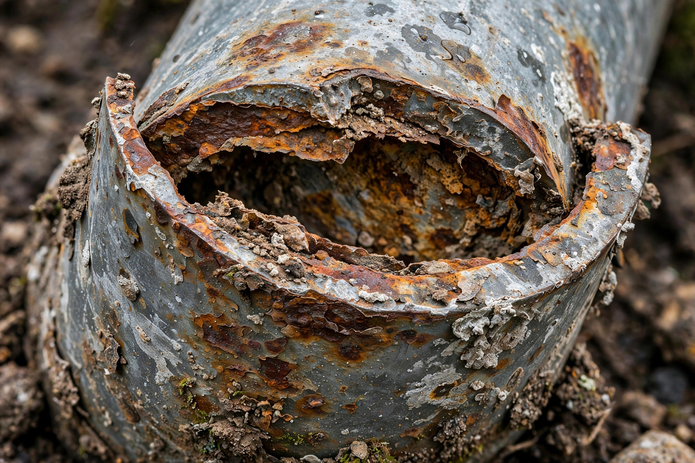
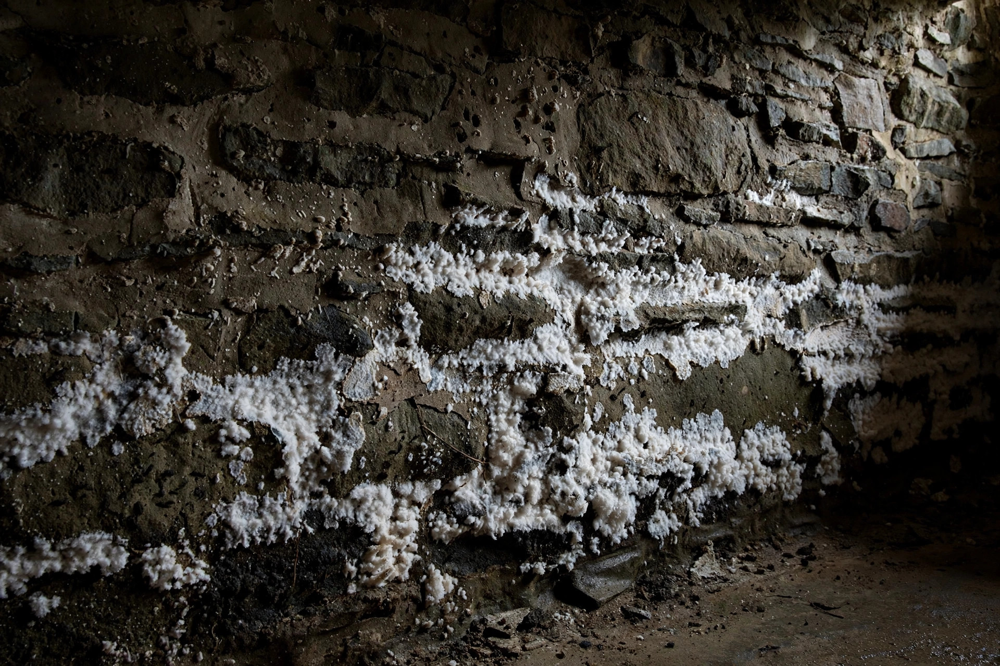
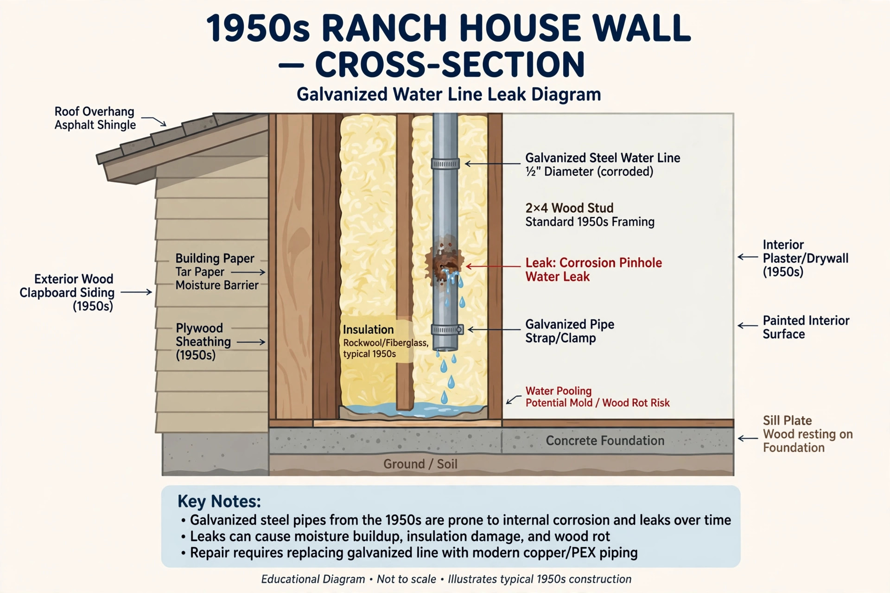

Mold Remediation in Caldwell, ID
Caldwell has some of the oldest housing in the Treasure Valley, a creek running through downtown and the Boise River along its north edge. That mix makes moisture problems here look different from the newer suburbs.
Caldwell’s homes, by era
Brick and frame homes, rubble or early concrete foundations, cellars and plaster walls.
Post-war bungalows and ranches with crawlspaces and original galvanized plumbing.
Tract homes on crawlspaces, many on former orchard and crop land.
New subdivisions with tight envelopes and attic HVAC.
What makes Caldwell homes damp

Creek & river proximity
Homes near Indian Creek and the Boise River floodplain can see higher groundwater in spring runoff and irrigation season.

Aging galvanized plumbing
Mid-century galvanized supply lines corrode from the inside and start pinhole leaks inside walls.

Old cellars & stone foundations
Pre-1930 cellars were never meant to be dry living space; finishing them without moisture control invites mold.
A typical Caldwell project looks like this

1950s ranch near Cleveland Blvd, kitchen wall stain
A brown stain appears low on the wall behind a kitchen sink. The cabinet floor is warped. The house still has its original galvanized supply lines, and one has rusted through behind the cabinet.
- Water shut off; plumber replaces the failed section (often with PEX).
- Sink base and drywall removed in containment.
- Stud bay cleaned and dried to normal readings.
- New board; cabinet replaced or rebuilt.
Caldwell mold questions
Should I replace old galvanized pipes to prevent water damage?
Galvanized steel typically lasts 40–60 years before corrosion causes leaks and low pressure. In homes from the 1950s–60s, repiping is often cheaper than repeated wall and mold repairs.
Is it safe to finish an old Caldwell cellar into a bedroom?
Only with moisture control: exterior drainage, a vapor barrier, insulation against the wall and a dehumidifier. Idaho building code also has egress window requirements for basement bedrooms.
Does living near Indian Creek increase mold risk?
It can raise groundwater and humidity for basements and crawlspaces close by, particularly in spring and summer. It doesn’t mean a home will have mold — just that the crawlspace is worth checking each year.
Where do I get a permit for repairs in Caldwell?
The City of Caldwell Building Department handles permits for plumbing, electrical and structural work after remediation.
Services in Caldwell
Free inspection for Caldwell homes
Historic downtown to the newest west-side phases.